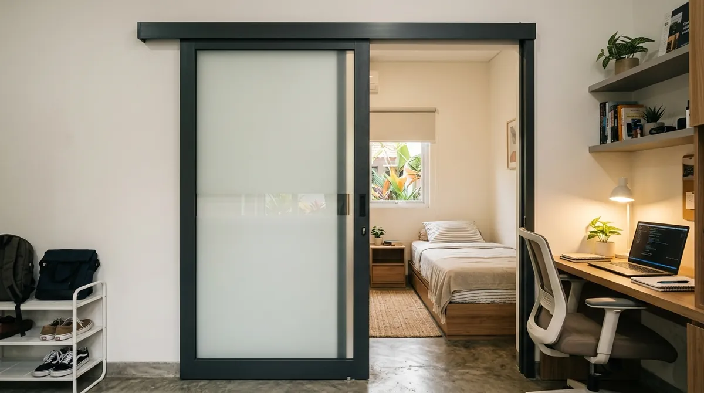
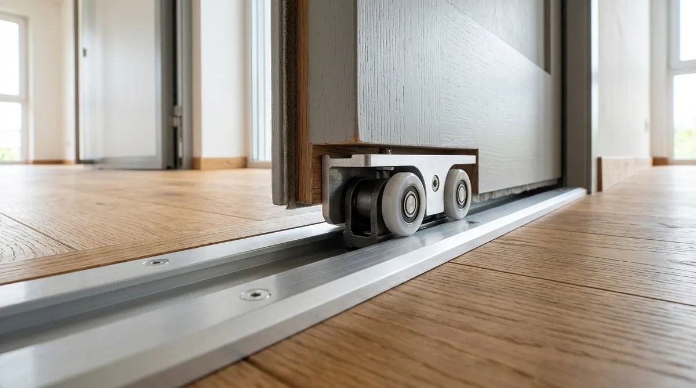

Tips Memilih Pintu Sliding Aluminium Hemat Ruang untuk Kos-Kosan di Malang

📌 Ringkasan Inti
Pintu sliding aluminium menjadi pilihan tepat untuk kos-kosan di Malang karena tidak membutuhkan ruang ayun seperti pintu engsel biasa. Pintu ini sangat cocok untuk kamar kos berukuran terbatas yang banyak dicari mahasiswa dekat kampus di Malang.
- Pintu sliding aluminium menghemat ruang karena bergerak menyamping, bukan berayun ke dalam kamar.
- Pengukuran bukaan pintu perlu dilakukan presisi agar rel geser berfungsi lancar tanpa hambatan.
- Pilihan ketebalan profil aluminium memengaruhi kekuatan dan daya tahan pintu terhadap pemakaian harian.
- Perawatan rel geser secara berkala membantu mencegah pintu macet dan aus pada roda bearing.
- Harga pintu sliding aluminium dapat bervariasi tergantung ukuran bukaan, profil bingkai, dan jenis kaca yang dipakai.
Mencari opsi sliding door aluminium murah malang yang tetap kokoh dan berpenampilan estetis kini menjadi prioritas utama para pemilik kos di kawasan Dinoyo, Suhat, hingga Sigura-gura Malang. Mengoptimalkan setiap sentimeter ruang kamar adalah kunci kenyamanan penghuni sekaligus daya tarik nilai sewa kamar kos.
Tingginya permintaan hunian sewa mahasiswa di sekitar kampus-kampus besar seperti UB, Polinema, UM, dan UIN Malang menuntut pemilik properti merancang tata letak kamar secara ringkas dan efisien. Pemakaian daun pintu konvensional model swing kerap memakan area gerak berharga, sehingga pintu geser aluminium hadir sebagai jalan keluar arsitektural yang paling ideal.
Apa Itu Pintu Sliding Aluminium untuk Kos-Kosan
Pintu sliding aluminium adalah sistem pintu geser berbahan rangka profil aluminium yang beroperasi menyamping mengikuti rel horizontal, tanpa memerlukan area ayun (swing clearance) seperti pintu engsel kayu pada umumnya. Model ini banyak diaplikasikan pada kamar kos di Malang karena keterbatasan luas kamar tidur, terutama di kawasan padat sekitar lingkar kampus.
Dengan mekanisme geser lateral, penghuni kos leluasa menaruh ranjang tidur, meja belajar, maupun rak pakaian persis di dekat kusen pintu tanpa waswas terbentur saat pintu dibuka. Rangka aluminium berkualitas juga memberikan keuntungan bobot yang ringan namun berdaya tahan tinggi, sehingga roda geser tidak cepat aus walau difungsikan puluhan kali dalam sehari.

Kenapa Pintu Sliding Aluminium Cocok untuk Kos-Kosan Malang
Pintu sliding aluminium sangat cocok untuk bangunan kos-kosan di Malang karena mampu menghemat ruang gerak, perawatannya sangat minim, serta kebal terhadap kelembapan udara dibanding pintu triplek atau kayu solid. Karakteristik iklim Kota Malang yang sejuk dengan curah hujan tinggi menuntut material yang stabil tanpa risiko melengkung akibat perubahan suhu.
Keunggulan utama pintu sliding aluminium bagi pengelola kos di Malang meliputi:
- Efisiensi Ruang Nyata: Menghilangkan radius putar ayun pintu selebar 80–90 cm, sehingga seluruh lantai kamar dapat dimanfaatkan secara optimal.
- Tahan Lembap & Rayap: Berbeda dari kayu yang mudah keropos dimakan rayap atau memuai saat musim hujan, aluminium anodized atau powder coating memiliki daya tahan superior puluhan tahun.
- Desain Modular Seragam: Pemilik kos dapat memesan ukuran standar serentak untuk 10 hingga 30 pintu kamar sekaligus, mempercepat tenggat pengerjaan renovasi proyek.
- Tampilan Bersih & Modern: Garis profil tipis bernuansa hitam (black anodized), putih, atau motif kayu meningkatkan persepsi eksklusif kamar kos di mata calon mahasiswa dan orang tua.
Paket Pintu Sliding Aluminium Kamar Kos Hemat Ruang Malang
Layanan fabrikasi dan instalasi pintu geser aluminium untuk kamar kos mahasiswa, homestay, dan sewa properti di Kota Malang. Dilengkapi rel roda bearing kedap suara, pengunci flush handle presisi, dan garansi resmi pengerjaan.
Cara Mengukur Bukaan Pintu Geser yang Presisi
Pengukuran bukaan dinding pintu geser menuntut ketelitian tinggi. Kesalahan toleransi beberapa milimeter saja dapat menyebabkan rel seret, daun pintu miring, atau celah cahaya yang mengurangi privasi kamar kos. Lakukan pengukuran bertahap berikut sebelum menyerahkan ukuran ke bengkel fabrikasi aluminium:
| Langkah Pengukuran | Metode Pemeriksaan | Toleransi Teknis |
|---|---|---|
| 1. Lebar Bukaan Dinding | Ukur jarak sisi kiri ke kanan pada 3 titik: bagian atas, tengah, dan bawah tembok. | Gunakan angka terkecil, toleransi celah sponing 3–5 mm untuk seal sealant. |
| 2. Tinggi Bukaan | Ukur jarak vertikal dari permukaan keramik jadi sampai bibir balok atas pada sisi kiri, tengah, dan kanan. | Pastikan lantai keramik sudah level waterpass agar rel bawah tidak tersendat. |
| 3. Jalur Geser Samping | Periksa bidang dinding kosong di sebelah bukaan selebar minimal sama dengan lebar daun pintu geser. | Pastikan tidak ada stopkontak atau tonjolan pipa air yang menghalangi daun pintu saat terbuka. |
| 4. Ketegakan Kusen (Plumb) | Cek lot/waterpass vertikal dinding opening untuk memastikan tembok tidak miring keluar-masuk. | Kemiringan dinding maksimal 2 mm sebelum pemasangan rangka luar. |
Tips Memilih Pintu Sliding Aluminium Hemat Ruang
Memilih pintu sliding aluminium yang awet memerlukan keseimbangan antara anggaran biaya dan kualitas spesifikasi komponen. Jangan tergiur semata penawaran harga sangat murah jika mengorbankan ketebalan profil dan kualitas rel:
- Gunakan Profil Ketebalan Standar Minimal 1.1 mm: Profil aluminium 1.1 mm hingga 1.35 mm (merek Alexindo atau Forta) memberikan rigiditas yang cukup agar daun pintu tidak melengkung saat didorong dengan cepat oleh penghuni.
- Pilih Rel Geser dengan Roda Bearing Berkualitas: Roda nilon bersuspensi bearing ganda bergerak jauh lebih senyap dibanding roda plastik murah, sehingga tidak mengganggu ketenangan kamar kos tetangga saat malam hari.
- Opsi Kaca Buram (Frosted Glass / Kaca Es): Untuk pintu utama atau pintu kamar mandi dalam kos, gunakan panel kaca es 5 mm atau kaca ribbed moru untuk menjaga privasi penghuni sembari tetap menyalurkan penerangan alami.
- Pilih Kunci Geser Model Flush Handle Recessed: Kunci tanam rata permukaan mencegah pegangan pintu menyenggol dinding saat pintu sliding dibuka penuh.
"Untuk kamar kos berukuran 3x3 meter di Malang, pintu sliding aluminium menghemat area bebas hingga 0,8 meter persegi dibanding pintu swing. Kunci keawetannya ada pada presisi rel atas-bawah dan pemilihan roda bearing yang tahan beban ratusan kali buka-tutup per hari."
Kesalahan Umum Saat Memasang Pintu Sliding Aluminium
Banyak pemilik kos mengeluhkan pintu geser yang macet atau anjlok setelah beberapa bulan pemakaian. Umumnya masalah ini bersumber dari beberapa kekeliruan mendasar:
- Tidak Memperhitungkan Ruang Jalur Geser: Mengabaikan ruang kosong di sisi samping bukaan, sehingga daun pintu tidak bisa tergeser maksimal dan mempersempit akses masuk.
- Memilih Rel Murah Tanpa Stopper Karet: Ketiadaan stoper ujung rel menyebabkan daun pintu menabrak dinding secara keras hingga mengendorkan baut pengikat rel.
- Lantai yang Tidak Rata Dibiarkan: Menempelkan rel bawah langsung pada keramik miring tanpa perataan semen atau ganjal shim khusus aplikator.
- Kotoran Pasir yang Dibiarkan di Alur Rel: Tidak membersihkan jalur rel dari debu dan pasir proyek semenjak pemasangan awal, yang berakibat roda nilon cepat terkikis.
Dengan perencanaan pengukuran yang presisi dan pemilihan aplikator berpengalaman di Malang Raya, pintu sliding aluminium menghadirkan kepraktisan ruang serta nilai estetika modern jangka panjang untuk investasi kos-kosan Anda.
Pertanyaan Seputar Pintu Sliding Kos Malang
Ya, karena pintu sliding bergerak menyamping mengikuti rel, sehingga tidak memerlukan ruang ayun (swing) seperti pintu engsel konvensional.
Harga bervariasi tergantung ukuran bukaan dinding, ketebalan profil aluminium (1.1 mm atau 1.35 mm), serta jenis kaca yang dipilih. Pemilik kos dapat meminta rincian penawaran langsung ke aplikator resmi di Malang.
Sangat cocok, karena mekanisme geser tidak memakan ruang lantai maupun ruang gerak di dalam kamar, sehingga penataan meja belajar dan lemari pakaian mahasiswa menjadi jauh lebih fleksibel.